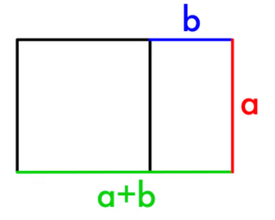

Ciąg Fibonacciego to ciąg liczb naturalnych określony w następujący
sposób: Pierwszy wyraz jest równy 0, drugi jest równy 1, a każdy kolejny
jest sumą dwóch poprzednich. Nazwę „ciąg Fibonacciego” spopularyzował w
XIX w. Édouard Lucas. Zaliczanie zera do elementów ciągu Fibonacciego
zależy od umowy – część autorów za pierwszy wyraz ciągu uważa liczbę 1.
0 + 1 = 1
1 + 1 = 2
1 + 2 = 3
2 + 3 = 5
3 + 5 = 8
5 + 8 = 13
8 + 13 = 21
13 + 21 = 34
21 + 34 = 55
34 + 55 = 89
Powstałe wyniki, czyli wyrazy ciągu nazywane są
liczbami Fibonocciego 0, 1, 1, 2, 3, 5, 8, 13, 21, 34, 55, 89, 144, 233,
377…
Najciekawsze jest to, że ciąg Fibonacciego ma ogromny związek ze złotą
liczbą. Złota liczba oznacza podział odcinka na dwie części w bardzo
specyficzny sposób: stosunek długości dłuższego odcinka do krótszego
musi jest równy stosunkowi całego odcinka do dłuższego odcinka.
Jest to tak zwany złoty podział i określany jest przez tzw. złotą liczbę
oznaczaną gracką literę φ (czyt. „fi”), której wartość wynosi
1,61803398875... Dzieląc kolejne liczby ze złotego ciągu przez
poprzednią otrzymamy liczby coraz bliższe złotej liczbie.
Bazując na złotej liczbie, możemy otrzymać złoty prostokąt, którego boki pozostają do siebie w stosunku złotej proporcji:
